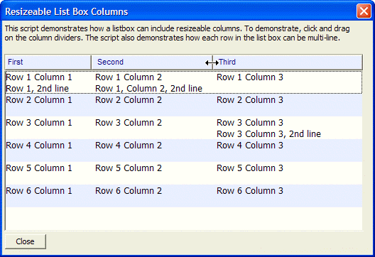

Resizable List Box Columns

Example
Note that the special syntax for the tab. {T=1.5:0-20} indicates a moveable tab stop whose initial position is at 1.5 inches. The tab stop can be moved in the range 0 to 20 inches. A tab definition of {T=1.5:.5-20}, for example, would indicate that when the column is resized, it cannot be moved left of the .5 inch tab position.
The special syntax for the tab: {T=$1} means that the actual tab position will be obtained from the first tab in the reference format string. In the case of the list box control the directive F=orig_fmt tells the list box that the reference format string is called "orig_fmt".
dim orig_fmt as C dim fmt as C dim format as P dim dlg_title as C orig_fmt = "{F=Arial,8}{C=Dark Blue}{B=Blue White}{A=1C}First{T=1.5:0-20}{A=2C}Second{T=3.5:0-20}{A=3C}Third{A=}" fmt = orig_fmt data = <<%a% Row 1 Column 1{T=$1}Row 1 Column 2{T=$2}Row 1 Column 3{LF}Row 1, 2nd line{T=$1}Row 1, Column 2, 2nd line Row 2 Column 1{T=$1}Row 2 Column 2{T=$2}Row 2 Column 3 Row 3 Column 1{T=$1}Row 3 Column 2{T=$2}Row 3 Column 3{LF}{T=$1}{T=$2}Row 3 Column 3, 2nd line Row 4 Column 1{T=$1}Row 4 Column 2{T=$2}Row 4 Column 3 Row 5 Column 1{T=$1}Row 5 Column 2{T=$2}Row 5 Column 3 Row 6 Column 1{T=$1}Row 6 Column 2{T=$2}Row 6 Column 3 %a% Format.tab_stops="" Format.odd_row_color="White" Format.even_row_color="Blue White" Format.odd_selected_color="Dark Blue" Format.even_selected_color="Dark Blue" Format.font="Tahoma,10" Format.font_color_unselected="Black" Format.font_color_selected="White" Format.lastbutton="OK" Format.group_size=1 Format.number_rows=.f. Format.alternating_bands=.t. data = a5_owner_draw_list_fmt(data, Format) |
dlg_title = "Resizeable List Box Columns" ui_dlg_box(dlg_title,<<%dlg% {font=tahoma,8} {wrap=100} This script demonstrates how a list box can include resizeable columns. To demonstrate, click and drag on the column dividers. The script also demonstrates how each row in the list box can be multi-line.; {lf}; {font=} {watch=ui_dlg_control_anchor_from_pos(dlg_title)!resize} <%O={@@};B=ILG;F=orig_fmt%100=fmt!click>; %O={@@};F=orig_fmt;R;B=T%.100,7item^#data ; <10&Close!close>; %dlg%,<<%code% if a_dlg_button = "resize" then 'This event is fired whenever the mouse is over the column headings. 'The event fires whether or not the columns are actually resized. a_dlg_button = "" if (fmt <> orig_fmt) then |
If the columns are resized, the orig_fmt string will contain the tab positions reflecting the new tab stops for each column. After resizing columns, fmt will no longer be the same as orig_fmt. We set fmt to orig_fmt (so now the displayed buttons reflect the tab stops that you "set" by dragging the column dividers).
fmt = orig_fmt end if end if if a_dlg_button = "click" then a_dlg_button = "" control = ui_dlg_control_anchor_from_pos(dlg_title) ui_msg_box("","User pressed: " + control) end if %code%) |
Next
Limitations
Desktop applications only
See Also
A5_OWNER_DRAW_LIST_FMT(), Miscellaneous Examples